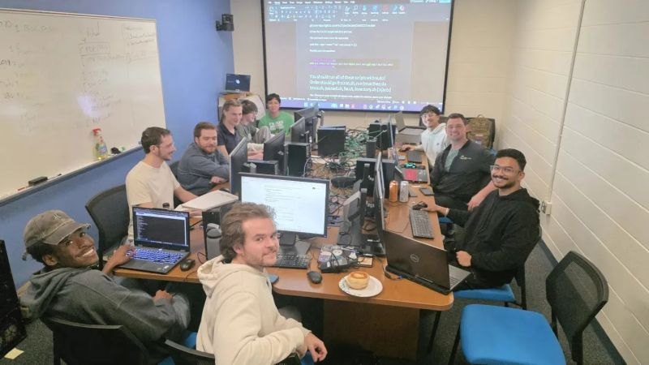
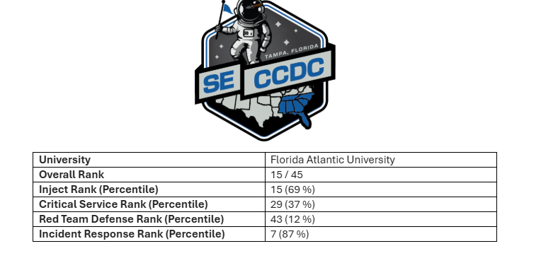
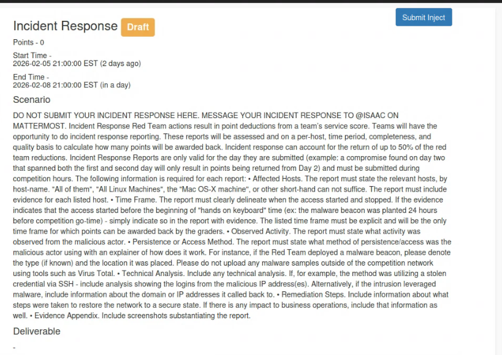
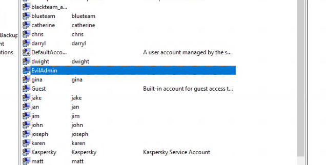
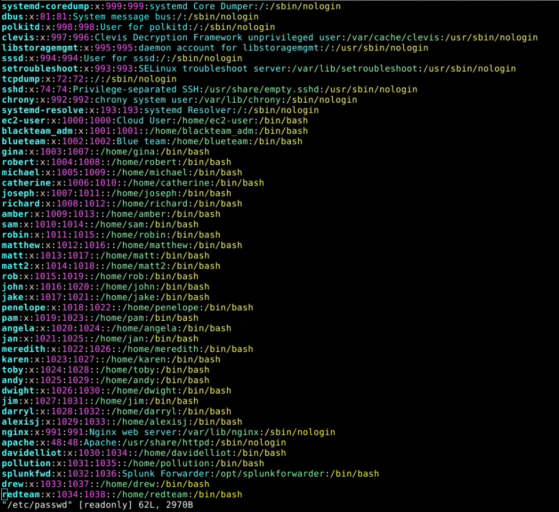

The Collegiate Cyber Defense Competition puts a student blue team in charge of a live network, keeping services up, keeping a red team out, and handling whatever gets thrown at them along the way, all while a scoring engine and a set of judges are watching every move. Southeast CCDC Qualifiers is the regional entry point into that format, and this year I competed with FAU's team through the Cybersecurity Club.
Scoring splits evenly between critical service uptime and inject completion, and any points a team loses to red team compromises can be partially clawed back, up to half, through a properly written incident response report. That last rule is what made incident response worth taking seriously as its own skill rather than an afterthought to the technical defense work.
My role
I worked injects and incident response. Injects are surprise business style requests that show up mid-competition, a new compliance requirement, an executive asking for a report, a vendor asking for access, and the blue team has to respond in writing, on the clock, without dropping the network defense work already in progress. Incident response was the other half, when the red team actually landed something, my job was figuring out what happened, containing it, and documenting it clearly enough that it would hold up to a judge reading it afterward.
Results

| Category | Rank |
|---|---|
| Overall | 15 / 45 |
| Inject | 15th, 69th percentile |
| Critical service uptime | 29th, 37th percentile |
| Red team defense | 43rd, 12th percentile |
| Incident response | 7th, 87th percentile |
What an inject actually looks like
Below is the actual scenario text from one of our incident response injects, the kind of document that lands mid-competition with a business scenario, a points value, and a countdown clock attached. It also spells out exactly what a report needs to include: affected hosts, a clear time frame, observed activity, the persistence or access method, technical analysis, remediation steps, and an evidence appendix. Our actual submitted answers aren't shown here, just the prompt itself.

Finding an unauthorized account
One of the simplest but highest value incident response tasks was auditing user accounts against the competition's official list of authorized users, anyone present on a host who wasn't on that list was either a legitimate default system account or something the red team had planted.

On this Windows host, EvilAdmin stood out immediately, not a name
any legitimate business would provision, and not on the authorized list.

Same idea on the Linux side, checking /etc/passwd turned up a
redteam account with a full interactive shell, not a service account
that should ever need one. Once flagged as unauthorized, removing the account
was the remediation step, then that removal and the evidence behind it became
the basis for the incident response report on that host.
Key takeaway
CCDC makes it obvious that defense isn't just technical, it's also communication. A network could be perfectly contained and still lose points if the incident report describing it is vague or late. Ranking 7th in incident response while ranking near the bottom in red team defense showed me that the two skills don't automatically come together, and that writing clearly under time pressure is its own skill worth training separately from the technical work.